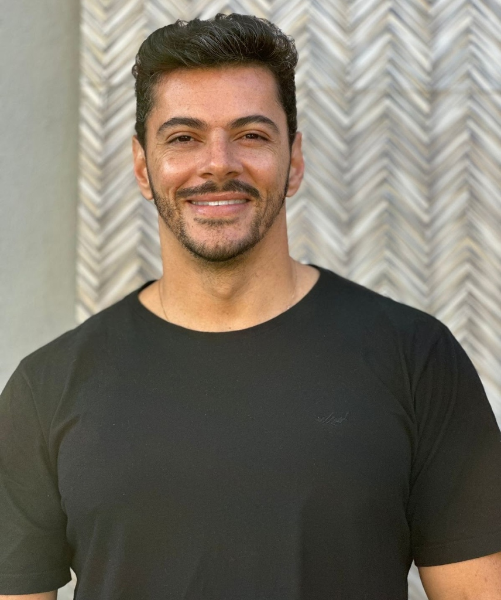
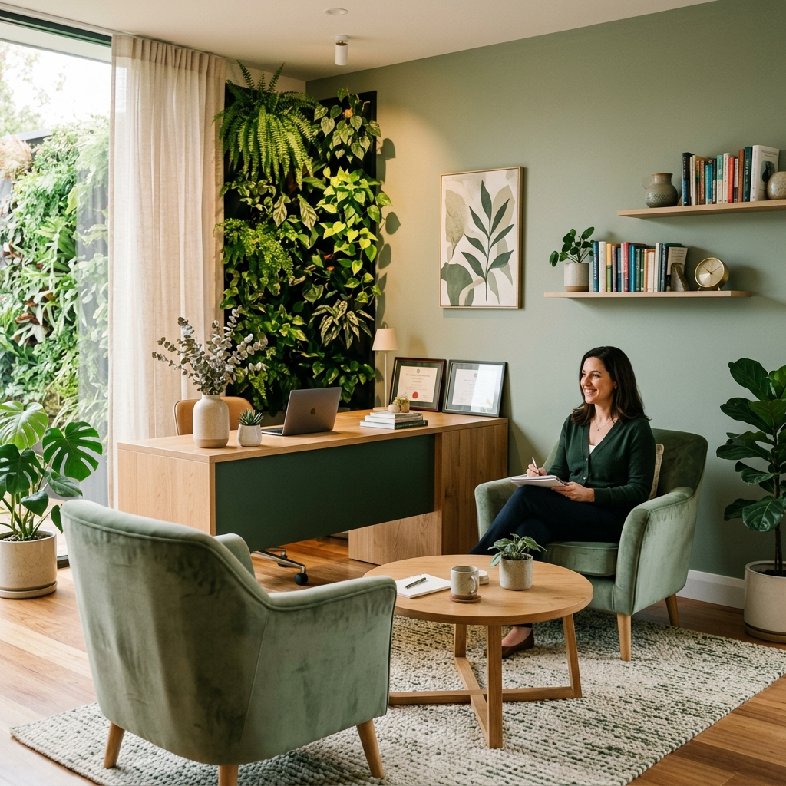

Olá, muito prazer!
Sou Psicólogo Clínico com formação em Terapia Cognitivo-Comportamental (TCC) e mais de 8 anos de experiência ajudando pessoas a superarem obstáculos e a conquistarem uma vida melhor.
Com uma abordagem centrada na empatia e no respeito, ofereço atendimento tanto online quanto presencial, atendendo pacientes no Brasil e ao redor do mundo. Meu compromisso é com o seu bem-estar, ajudando você a encontrar as respostas e soluções que busca.
Agende agora e comece sua jornada de transformação emocional.
Iniciar AtendimentoMissão
Promover a saúde mental e o bem-estar, ajudando as pessoas a superar desafios e viver uma vida mais plena e equilibrada.
Visão
Ser referência em psicologia clínica, oferecendo apoio e orientação de excelência e qualidade a todos que precisarem.
Valores
Empatia, Respeito, Compaixão, Ética, Profissionalismo, Sabedoria, Humildade, Disciplina e Justiça em cada sessão.
Como saber se você precisa de um psicólogo?
Se você se identifica com um ou mais dos pontos abaixo, a psicoterapia pode te ajudar a resgatar o controle e o equilíbrio da sua vida.
Estresse & Ansiedade Constantemente
Você se sente frequentemente sobrecarregado, com pensamentos acelerados, tensão corporal ou apreensão constante em relação ao futuro.
Conflitos Emocionais & Relacionais
Desentendimentos recorrentes e dificuldades de comunicação que estão afetando suas relações pessoais, familiares ou profissionais.
Traumas do Passado Não Resolvidos
Dificuldade para superar momentos dolorosos ou experiências do passado que continuam impactando seu presente e suas decisões.
Tristeza & Melancolia Frequentes
Sensação persistente de vazio, desânimo, falta de energia para atividades cotidianas ou perda de interesse nas coisas que costumava gostar.
Mudanças Significativas de Vida
Momentos de transição de carreira, término de ciclos, luto, mudanças de cidade ou novos desafios que exigem suporte emocional especializado.
Sensação de Estar Perdido ou Sem Esperança
Sensação de falta de propósito, indecisão frequente ou incerteza sobre qual caminho seguir em sua jornada pessoal.
Especialidades & Atendimento Clínico
Tratamentos personalizados fundamentados na Terapia Cognitivo-Comportamental (TCC), voltados a resultados concretos.
Emagrecimento, Obesidade & Compulsão Alimentar
Acompanhamento focado nos aspectos emocionais da relação com a comida, reestruturação de crenças sobre autoimagem, controle de impulsos e mudança sustentável de hábitos comportamentais.
- Controle de impulsos e ansiedade alimentar
- Tratamento da compulsão e efeito sanfona
- Preparatório e pós-operatório bariátrico
Dependência Química & Vícios em Geral
Intervenção estruturada para o tratamento de vícios em substâncias (álcool, drogas) e comportamentais (telas, jogos, pornografia, masturbação compulsiva), visando a prevenção de recaídas e reinserção saudável.
- Dependência de álcool e drogas
- Compulsão por telas, pornografia e tecnologia
- Estratégias práticas de autocontrole
Depressão, Ansiedade & Angústias
Manejamento de quadros ansiosos, fobias, síndrome do pânico e episódios depressivos através do mapeamento de pensamentos disfuncionais e regulação emocional.
- Redução da ansiedade e ataques de pânico
- Superação da depressão e da angústia profunda
- Ferramentas práticas para a rotina diária
Psicologia Esportiva (Atletas de Alto Rendimento)
Desenvolvimento do mindset de alta performance para atletas profissionais e amadores. Foco no controle de pressão competitiva, concentração, motivação e recuperação de lesões.
- Controle de ansiedade pré-competitiva
- Foco, concentração e resiliência mental
- Suporte emocional na recuperação de lesões
Relacionamentos & Conflitos Interpessoais
Auxílio no desenvolvimento de habilidades sociais, assertividade comunicativa, superação de crises conjugais, términos e construção de vínculos saudáveis.
- Comunicação assertiva e limites saudáveis
- Processamento de luto e términos afetivos
- Fortalecimento do autovalor e autoestima
Acompanhamento para Uso de Cannabis / Canabidiol
Suporte psicológico especializado para pacientes em tratamento com cannabis medicinal e derivados (CBD), acompanhando a evolução emocional e a adaptação do tratamento.
- Monitoramento do bem-estar emocional
- Acompanhamento multidisciplinar integrativo
- Emissão de pareceres e suporte psicológico
Emissão de Laudos Psicológicos Especializados
Elaboração de avaliações e laudos psicológicos criteriosos e fundamentados nas normas éticas do Conselho Federal de Psicologia (CFP), atendendo às exigências médicas, jurídicas e administrativas.
Como funciona a avaliação para Laudo?
-
1
Consulta Inicial & Agendamento
Identificação da finalidade específica exigida pelo médico, órgão ou processo.
-
2
Sessões de Avaliação Técnica
Aplicação de entrevistas estruturadas e instrumentos psicológicos reconhecidos pelo CFP.
-
3
Emissão & Entrega do Documento
Elaboração minuciosa do laudo técnico com assinatura digital/presencial autenticada.
Modalidades de Atendimento
Escolha o formato que melhor se adapta à sua rotina, com a garantia do mesmo padrão de excelência e sigilo ético.
Atendimento Psicológico Online
Receba suporte emocional especializado sem sair de casa, de qualquer lugar do Brasil e do mundo. Prática com reconhecimento internacional e total flexibilidade de horários.
- 100% Confidencial & Seguro via videochamada criptografada.
- Flexibilidade de Horários adaptados ao seu fuso horário.
- Conforto do Seu Lar sem necessidade de deslocamento no trânsito.
- Atendimento a partir dos 16 anos de idade.
Atendimento Presencial
Um ambiente acolhedor, discreto e estruturado para proporcionar a melhor experiência no cuidado com a sua saúde mental em São Sebastião do Paraíso - MG.
- Localização Privilegiada no bairro Lagoinha.
- Espaço Acolhedor projetado para o seu conforto emocional.
- Fácil Acesso & Estacionamento para sua comodidade.
- Horário de Atendimento: Seg a Sex, das 08h às 19h.
Conheça Nosso Espaço Terapêutico

Perguntas Frequentes (FAQ)
Respostas claras para as principais dúvidas sobre as consultas e o processo terapêutico.
Ofereço uma ampla gama de serviços psicológicos, tanto online quanto presenciais. Isso inclui atendimento para emagrecimento, obesidade, compulsão alimentar, dependência química, vícios em geral (telas, pornografia), depressão, ansiedade, angústias, problemas de relacionamento e acompanhamento de atletas de alto rendimento. Também forneço laudos psicológicos para finalidades como cirurgia bariátrica, perícia médica, aposentadoria, vasectomia, uso de cannabis e canabidiol, e condições psicológicas para venda de imóveis.
O atendimento psicológico online é realizado através de videoconferência individual e segura, permitindo que você receba suporte psicológico de qualquer lugar do Brasil e do mundo. O processo é 100% seguro e confidencial, com a mesma eficácia e dedicação do atendimento presencial. Agendamos as sessões conforme sua disponibilidade de horário.
Você precisa apenas de um dispositivo com acesso à internet (celular, tablet ou computador) e um local reservado e tranquilo onde você se sinta à vontade para conversar sem interrupções. Após o agendamento via WhatsApp, você receberá o link direto da sala virtual com antecedência.
É necessário agendar uma consulta presencial ou online onde discutiremos a finalidade e as exigências do laudo. Durante a avaliação, realizaremos entrevistas e testes validados. Com base nas evidências, o laudo técnico é fundamentado e assinado no prazo acordado.
O atendimento para dependência química foca em tratar a dependência de substâncias específicas (como álcool e drogas), abordando os fatores emocionais, familiares e comportamentais. Já o atendimento para vícios em geral aborda comportamentos compulsivos como telas, pornografia, jogos e compras. Ambos utilizam a Terapia Cognitivo-Comportamental para reestruturação hábitos.
O acompanhamento psicológico para atletas visa otimizar o rendimento esportivo através do controle do estresse, foco, manejo de pressão, aumento da resiliência mental e suporte emocional durante reabilitações de lesões.
Ofereço atendimento psicológico a pessoas a partir dos 16 anos de idade. A intervenção é adaptada individualmente para atender às demandas da juventude e da vida adulta.
Entre em Contato
Estou à disposição para esclarecer suas dúvidas e agendar sua primeira consulta. Dê o primeiro passo para o seu bem-estar emocional hoje mesmo.
Rua Manoel Palma, R. Antônio Gomes Viêira, 20 - Lagoinha
São Sebastião do Paraíso - MG, 37950-000
Segunda a Sexta-feira: 08:00 às 19:00